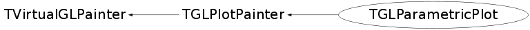

class TGLParametricPlot: public TGLPlotPainter
A parametric surface is a surface defined by a parametric equation, involving two parameters (u, v): S(u, v) = (x(u, v), y(u, v), z(u, v)). For example, "limpet torus" surface can be defined as: x = cos(u) / (sqrt(2) + sin(v)) y = sin(u) / (sqrt(2) + sin(v)) z = 1 / (sqrt(2) + cos(v)), where -pi <= u <= pi, -pi <= v <= pi. TGLParametricEquation * eq = new TGLParametricEquation("Limpet_torus", "cos(u) / (sqrt(2.) + sin(v))", "sin(u) / (sqrt(2.) + sin(v))", "1 / (sqrt(2) + cos(v))"); $ROOTSYS/tutorials/gl/glparametric.C contains more examples. Parametric equations can be specified: 1. by string expressions, as with TF2, but with 'u' instead of 'x' and 'v' instead of 'y'. 2. by function - see ParametricEquation_t declaration.
Function Members (Methods)
public:
protected:
| virtual void | TGLPlotPainter::ClearBuffers() const |
| virtual void | TGLPlotPainter::DrawPaletteAxis() const |
| void | TGLPlotPainter::DrawSections() const |
| const TColor* | TGLPlotPainter::GetPadColor() const |
| void | TGLPlotPainter::MoveSection(Int_t px, Int_t py) |
| void | TGLPlotPainter::PrintPlot() const |
| void | TGLPlotPainter::RestoreModelviewMatrix() const |
| void | TGLPlotPainter::RestoreProjectionMatrix() const |
| void | TGLPlotPainter::SaveModelviewMatrix() const |
| void | TGLPlotPainter::SaveProjectionMatrix() const |
private:
| TGLParametricPlot(const TGLParametricPlot&) | |
| virtual void | DeInitGL() const |
| virtual void | DrawPlot() const |
| virtual void | DrawSectionXOY() const |
| virtual void | DrawSectionXOZ() const |
| virtual void | DrawSectionYOZ() const |
| void | InitColors() |
| virtual void | InitGL() const |
| TGLParametricPlot& | operator=(const TGLParametricPlot&) |
| void | SetSurfaceColor() const |
Data Members
public:
| enum EMeshSize { | kLow | |
| kHigh | ||
| }; | ||
| enum TGLPlotPainter::ESelectionBase { | kHighColorSelectionBase | |
| kTrueColorSelectionBase | ||
| }; | ||
| enum TGLPlotPainter::ECutAxisID { | kXAxis | |
| kYAxis | ||
| kZAxis | ||
| }; |
protected:
private:
| Int_t | fColorScheme | |
| TGLParametricEquation* | fEquation | |
| TGL2DArray<TGLParametricPlot::Vertex_t> | fMesh | |
| Int_t | fMeshSize | |
| Bool_t | fShowMesh |
Class Charts
{kind=link}
{kind=link}
{kind=link}
{kind=link}

Function documentation
Bool_t InitGeometry()
Build mesh. The surface is 'immutable': the only reason to rebuild it - the change in size or if one of equations contain reference to TF2 function, whose parameters were changed.
void Pan(Int_t px, Int_t py)
User's moving mouse cursor, with middle mouse button pressed (for pad). Calculate 3d shift related to 2d mouse movement.
void ProcessEvent(Int_t event, Int_t px, Int_t py)
Change color/mesh size or switch on/off mesh/box cut. Left double click - remove box cut.
void InitColors()
Calculate colors for vertices, using one of 20 color themes. -1 simple 'metal' surface.
TGLParametricPlot(TGLParametricEquation* equation, TGLPlotCamera* camera)